Technology · · 26 min read
Warcraft III Is the Most Influential Game Ever Made
League of Legends, Dota 2, Honor of Kings, tower defence, auto battlers and World of Warcraft all come from one 2002 strategy game.
Warcraft III Is the Most Influential Game Ever Made
When I was around 12 years old, I was obsessed with this new game winning all the "Game of the Year" awards, called Warcraft III: Reign of Chaos, then its incredible expansion, Warcraft III: The Frozen Throne. But at some point, after playing the campaign, I learned about multiplayer. I spent so much of that Summer at my friend's house listening to Jimmy Eat World and Dragonforce, while playing Warcraft III. I would open the game, choose multiplayer, click 'Custom Game', and scroll a list of maps with names like Footmen Frenzy, Wintermaul, Sheep Tag, Vampire Tag, Life of a Peasant (and the myriad of adaptations), Green TD, X Hero Siege, various Lord of the Rings themed games, Tree Tag, Hero Line Wars, DotA Allstars 5.84c, and more. I should make it clear that none of these were actually created by the developers of W3. The game Blizzard had spent four years making became mostly a launcher for other people's ideas and games.
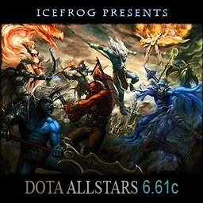
DotA Allstars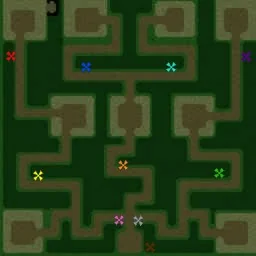
Green TD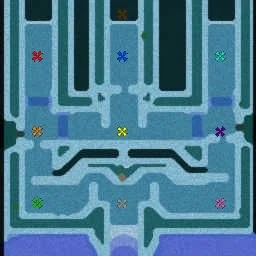
Wintermaul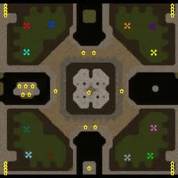
Footmen Frenzy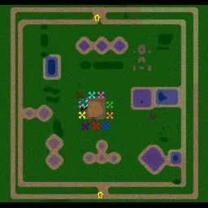
Sheep Tag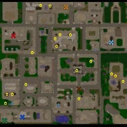
Life of a Peasant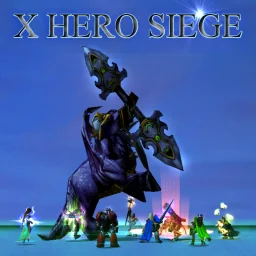
X Hero Siege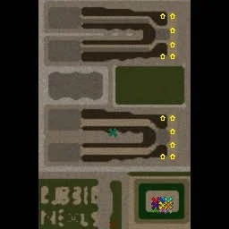
Hero Line Wars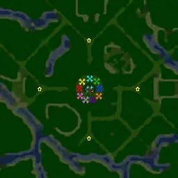
Tree TagTwenty-something years later I've realized a lot of people grew up the same way. Counting games, TV and film, no franchise has had more cultural impact this century than Warcraft. And in September 2026, 23 years after The Frozen Throne, Blizzard put out a new expansion for it, Forsaken Kingdom. More on that at the end.
Quick jargon guide
- RTS (real-time strategy): build a base, gather resources, raise an army, and do it all at once with no turns. Dune II, Command & Conquer, StarCraft and Warcraft are the family.
- Custom map: a level built by a player in the game's own editor. In Warcraft III a custom map could rewrite every rule, so "map" undersells it. "Mod" is the wider word.
- World Editor: the map editor Blizzard shipped in the Warcraft III box, with a point-and-click trigger system and a scripting language called JASS for people who wanted more.
- Hero unit: a single powerful unit that gains levels, learns abilities and carries items. Warcraft III built its whole design around them.
- Creeps: neutral monsters scattered around a map, there to be killed for experience and gold.
- MOBA (multiplayer online battle arena): two teams of five, each player controlling one hero, trying to push down lanes and destroy the other side's base. The name was coined by Riot Games to avoid saying "DotA-like".
- DotA (Defense of the Ancients): the Warcraft III custom map that defined the MOBA. Spelled DotA for the map, Dota for Valve's sequel.
- Tower defence: enemies walk a path in waves, you build towers beside it to stop them, and anything that gets through costs you a life.
- Auto battler: you buy and place units on a small board between rounds, then watch them fight on their own. Also called auto chess, after the map that started it.
- Esports: competitive gaming with tournaments, sponsors and an audience. Warcraft III was one of the first games with a professional scene.
How I am scoring this
"Most influential" doesn't mean "most sold". Warcraft III: Reign of Chaos sold about a million copies in its first month, the fastest a PC game had ever sold at that point[1]. That was a big deal in 2002, largely due to it being a physical media era at the time, unlike the much easier sales platforms of Steam and Epic Games today. "Most influential" also doesn't mean best, because that gets messy quickly (better than Tetris? Mario? chess? football? StarCraft?)
I'm mostly considering causality - what came after because of the release of W3? Which games exist only because this one did, and how many people play them today? By that measure the answer isn't Mario or Doom, it's a game most people under thirty have never played.
-
MOBAs
-
DotAEul, 2003Eul rebuilt Aeon of Strife, a StarCraft map, with Warcraft III's heroes, items and levelling: one hero each, three lanes, waves of soldiers.
-
DotA Allstars2004The version that pulled the best heroes from a dozen copies of Eul's map. Guinsoo ran it from 2004 and added item recipes and the boss in the river, then IceFrog took over in 2005.
-
League of Legends2009Riot hired Guinsoo and Pendragon, who ran the Allstars community site. Over a hundred million monthly players by 2016.Dota 22013Valve hired IceFrog in 2009. Its 2021 world championship had a forty million dollar prize pool, crowdfunded by players.Honor of Kings2015Tencent's phone MOBA for China. A hundred million daily players by 2020, by Tencent's own count.Heroes of the Storm2015Blizzard's own MOBA, three years after it settled with Valve over the word DOTA.
-
ArcaneNetflix, 2021Riot's series about two sisters from the undercity below Piltover. In 2022 it was the first streaming series to win the Emmy for Outstanding Animated Program.
-
-
Tower defence
-
Tower defence mapsWintermaul, Green TD, Element TDWaves on a path or a maze you build, a pause to build between them, a life lost for every leak, towers that sell back for about half. The rules were settled in Warcraft III custom games.
-
Flash gamesDesktop Tower Defense, Bloons TD, 2007Tower defence left the editor for the browser: Warcraft III tower defence without the orcs.
-
Defense Grid2008Hidden Path Entertainment, December 2008. Aliens walk a path through a base to steal its power cores, and your towers have to stop them carrying the cores back out.Plants vs. Zombies2009PopCap Games, May 2009. Zombies walk down the lanes of a lawn and you plant defences in their way. It was the fastest seller PopCap had made.Kingdom Rush2011Ironhide Game Studio, from Uruguay, July 2011. It came out as a free Flash game on Armor Games, then moved to phones.Legion TD 2A standalone game on Steam, made by the people who wrote the Legion TD map. Element TD 2 is the same story.
-
-
Auto battlers
-
Pokemon Defensea Warcraft III mapDrodo, the studio behind Auto Chess, named it and mahjong as the inspirations.
-
Dota Auto ChessDota 2's Arcade, 2019A custom game, January 2019: eight players, a chessboard each, units from a shared shop. Millions of players within months.
-
Teamfight Tactics2019Riot's version, June 2019.Dota Underlords2019Valve's version, June 2019.Battlegrounds2019Blizzard's version, added to Hearthstone in November 2019.
-
-
Story and setting
-
The campaign's castArthas, Thrall, Jaina, Sylvanas, IllidanThe cast and places World of Warcraft is built on: the Scourge, the Burning Legion, Kalimdor, Northrend, and the Horde as a people.
-
World of Warcraft2004It plays more like EverQuest, but its world, cast and art are Warcraft III's, and Rexxar's bonus campaign in The Frozen Throne was a prototype. Twelve million subscribers at its peak.
-
Wrath of the Lich King2008The WoW expansion The Frozen Throne's ending sets up. It sold 2.8 million copies in a day.Hearthstone2014Blizzard's card game: a deck of Warcraft characters, most of them from Warcraft III.
-
What Blizzard shipped in 2002
Reign of Chaos came out in July 2002, and The Frozen Throne expansion a year later. As a strategy game it was built around heroes. Each side had a handful of named units that gained levels, learned spells and carried items, and games were won or lost by their hero-focused strategies, generally. The maps were full of creeps, neutral monsters you killed to level those heroes up, and an upkeep tax kicked in when your army got big, so fights happened between a dozen units and not a hundred.
I loved it. It had a proper campaign, and the campaign's story, where a paladin (holy warrior) Arthas picks up a cursed sword and goes home to kill his King and Father, toppling his own Kingdom, beats most films.
The world editor let you place trees and hills, obviously, but it also gave you the trigger system Blizzard's own designers had used to build the campaign. When a unit enters this region, do this. When a hero dies, give the killer gold. Change what this spell does. Behind the triggers sat JASS, a full scripting language, for anyone who wanted to go further. You could make a game that had nothing to do with orcs and elves, and so the community did.
What turned that into an industry was the custom games lobby, which was an app store long before the concept existed. When you joined a custom game on Battle.net, the map downloaded to your machine from the host in seconds, without a website or installer. Anyone could make a map and have thousands of strangers playing it within days.
Timeline
- early 2002Aeon of Strife, a StarCraft custom map: one hero each, lanes, waves of computer-controlled soldiers. The credit usually goes to a mapper called Aeon64, but the earliest map files anyone has found carry the name Gunner_4_ever[2].
- 2002Warcraft III: Reign of Chaos ships with the World Editor and custom games on Battle.net.
- 2003The Frozen Throne. Eul releases Defense of the Ancients, an Aeon of Strife remake with Warcraft III heroes.
- 2004DotA Allstars merges the best heroes from a dozen variants. Steve "Guinsoo" Feak takes over. World of Warcraft launches in November.
- 2005IceFrog takes over Allstars and never reveals his name. Li "Sky" Xiaofeng wins the World Cyber Games on Warcraft III, the first of two.
- 2009Riot Games, having hired Guinsoo and Pendragon, releases League of Legends. Valve hires IceFrog.
- 2010–2013Heroes of Newerth. Blizzard and Valve fight over the word "DOTA" and settle. Dota 2 releases in 2013.
- 2015Blizzard's own MOBA, Heroes of the Storm. Tencent, now Riot's owner, releases Honor of Kings for phones.
- 2019Dota Auto Chess appears as a custom game inside Dota 2 in January. Teamfight Tactics, Dota Underlords and Hearthstone Battlegrounds all ship before the year is out.
- 2020Warcraft III: Reforged. More on that below.
- 2026Forsaken Kingdom, the first Warcraft III expansion since The Frozen Throne.
DotA
Defense of the Ancients wasn't original: a StarCraft map called Aeon of Strife had already done one hero, three lanes and waves of soldiers a year earlier. What Eul did in 2003 was rebuild it with Warcraft III's heroes, items and levelling. I think a hero who gets stronger over forty minutes, chooses between six items and can die to a single mistake is a much better thing to control than a StarCraft marine. When The Frozen Throne came out Eul moved on, a dozen copies of his map sprang up, and a version called Allstars pulled the best heroes from all of them into one map.
Two people took it from popular to enormous. Steve Feak, known as Guinsoo, ran Allstars from 2004 and added the things that made it a sport: item recipes, a boss in the river, a balance pass every few weeks. Then in 2005 a mapper known only as IceFrog took it over. He's still never told anyone his name, and he ran it for years, balancing it carefully.
Somewhere along the way DotA became the reason people had Warcraft III installed at all. In the internet cafes of China, Korea and Southeast Asia, that's what it was there for.
Riot Games hired Guinsoo and Steve "Pendragon" Mescon, who'd run the DotA Allstars community site, and then shipped League of Legends in October 2009. Valve hired IceFrog the same year and shipped Dota 2 in 2013. Blizzard, the company whose editor all of these people had learned on, fought Valve over the trademark on the word "DOTA", gave up the commercial rights in a 2012 settlement, and shipped its own MOBA in 2015. Riot even made up the word MOBA so that the name of the genre wouldn't have somebody else's map in it, and these days hardly anyone says "DotA-like". Also, can you imagine just being really into Warcraft 3, being deeply involved in a community around some custom map you like, then getting hired by Blizzard or Riot Games? Crazy.
Riot said in 2016 that League of Legends had over a hundred million monthly players[3]. Tencent bought Riot outright and built Honor of Kings, a phone MOBA for China. By Tencent's own count it passed a hundred million daily players in 2020, and it has been the highest grossing game on the planet for years[4][5].
Dota 2's 2021 world championship had a prize pool of forty million dollars, crowdfunded by players[6]. The League of Legends world final draws more live viewers than most sports finals outside football[7].
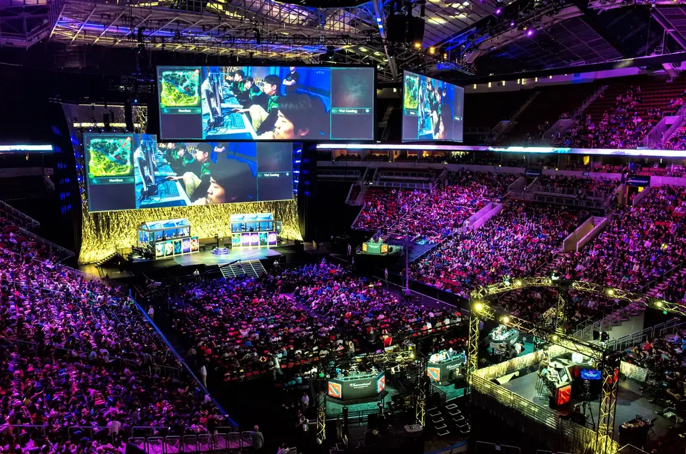
It's produced television too. Arcane, animated by the French studio Fortiche and put on Netflix in 2021, follows two sisters from the undercity below Piltover, one of whom grows up into the champion Jinx. It won the Emmy for Outstanding Animated Program in 2022, the first streaming series ever to win it, and no game adaptation had been anywhere near[8]. Riot is reported to have spent something like 250 million dollars across its two seasons and to have made no direct profit on it[9]. I can also safely say it made for excellent viewing.
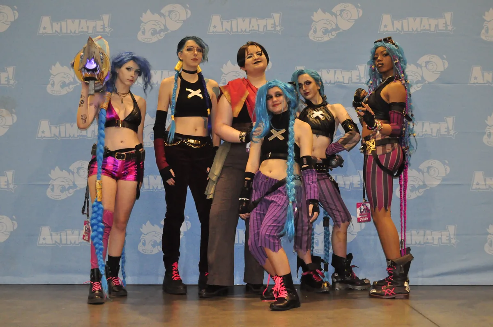
Tower defence, exported
Tower defence existed before Warcraft III in bits and pieces. Rampart in 1990 had you building walls between rounds, and StarCraft had a few turret maps. The rules every tower defence game has used since were settled in Warcraft III custom games: a fixed path or a maze you build yourself, enemies in numbered waves, a pause to build and upgrade between them, a life lost for every leak, and towers you can sell for ~half their price. Two of the maps in that list I used to scroll, Wintermaul and Green TD (including circle), were tower defence, and so were Burbenog TD, Gem TD and Element TD, and that's where a lot of people worked out that a maze with one open corner beats a straight line of towers.
Around 2007 the genre left the editor for the browser. Desktop Tower Defense and Bloons TD were Flash games, and they were Warcraft III tower defence without the orcs. Then came Defense Grid (2008), Plants vs. Zombies (2009) and Kingdom Rush (2011), and Bloons is still going, and still selling, on Steam and on mobile. The World Editor originals got their own sequels too: Element TD 2 and Legion TD 2 are standalone games on Steam, made by the people who wrote the maps. Legion TD is also halfway to an auto battler. You buy units that fight the waves for you instead of towers, and you spend spare gold sending extra creeps at the other team. The fighting is automatic, the economy is shared and you attack your opponent indirectly.
Auto battlers
In January 2019 a small Chinese studio called Drodo released Dota Auto Chess. It was a custom map inside Dota 2's Arcade, which is Valve's version of the Warcraft III custom game lobby, built by people who'd been hired out of that lobby. Eight players get a chessboard each, buy units from a shared shop, place them, watch them fight, and lose health when they lose. Drodo have said the inspirations were mahjong and a Warcraft III custom map called Pokemon Defense[10].
Within a few months it had millions of players. By the end of the year, the three biggest companies making these games had each shipped their own version, the second time in fifteen years they'd chased a hobby project out of a custom game list. Riot released Teamfight Tactics in June 2019, Valve released Dota Underlords the same month, and Blizzard added Battlegrounds to Hearthstone in November.
Esports
Esports didn't start with Warcraft III. Korea had a StarCraft: Brood War scene with its own television channels before Reign of Chaos shipped, and that's where professional gaming as an institution begins. Warcraft III shaped it as a game in its own right, and much more through DotA.
Through the 2000s it was a flagship game at the World Cyber Games and the Electronic Sports World Cup, back when esports meant a few international tournaments a year and national qualifiers. Manuel "Grubby" Schenkhuizen, a Dutch orc player, turned it into a career that is still running on Twitch two decades later. Jang "Moon" Jae-ho, a Korean night elf specialist, was good enough to be called the Fifth Race (the game has four). Li "Sky" Xiaofeng took the World Cyber Games in 2005 and again in 2006, the first player to win it two years running[11], and in 2008 he and Moon carried the Olympic torch, after Razer talked the pair of them into the relay[12].
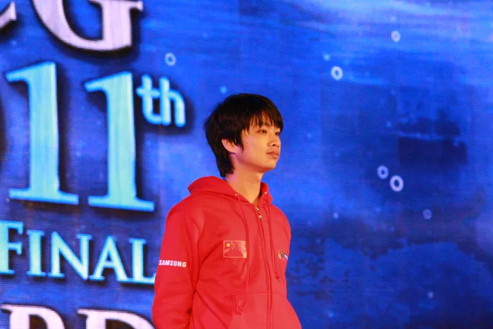
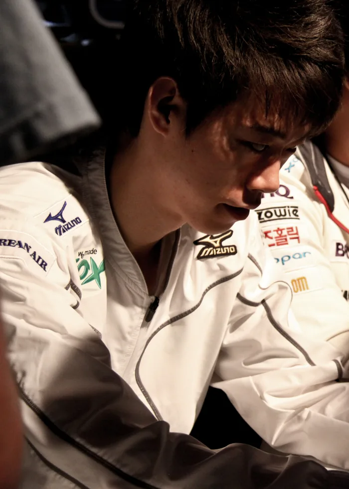
Riot ran its own competition instead of leaving it to tournament organisers. The League Championship Series started in 2013 with salaried players on year-long contracts, a regular season and a playoff, and Riot pushed the American government until League professionals were granted the same visa class as foreign athletes (!!!)[13]. Five years later it sold permanent places in that league for ten million dollars each[14]. Every publisher-run league since, the Overwatch League, the Call of Duty League, Valorant's circuit, is built to that plan.
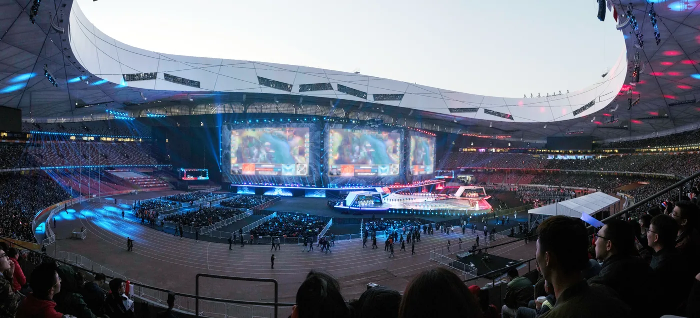
Valve went the other way. The International funds its prize pool by selling players a battle pass and putting a share of the sales into the pot, which is how a tournament for a free game got to forty million dollars without a single traditional sponsor. The franchised league and the crowdfunded prize pool are the two ways modern esports pays for itself, and both were built for games that started as Warcraft III custom maps.
World of Warcraft
World of Warcraft isn't a descendant of Warcraft III in how it plays. Its design owes much more to EverQuest. What it took from Warcraft III is everything else: Arthas, Thrall, Jaina, Illidan, Sylvanas, the Scourge, the Burning Legion, Kalimdor, Northrend, and the idea of the Horde as a people and not just a green army. That's the cast and setting of Warcraft III's campaign, and The Frozen Throne's final cutscene sets up Wrath of the Lich King, which sold 2.8 million copies in a day in 2008[15]. The art came across too. WoW's thick shoulders and hand-painted textures, which let it run on nearly any old PC for twenty years, are Warcraft III's low-polygon models scaled up.
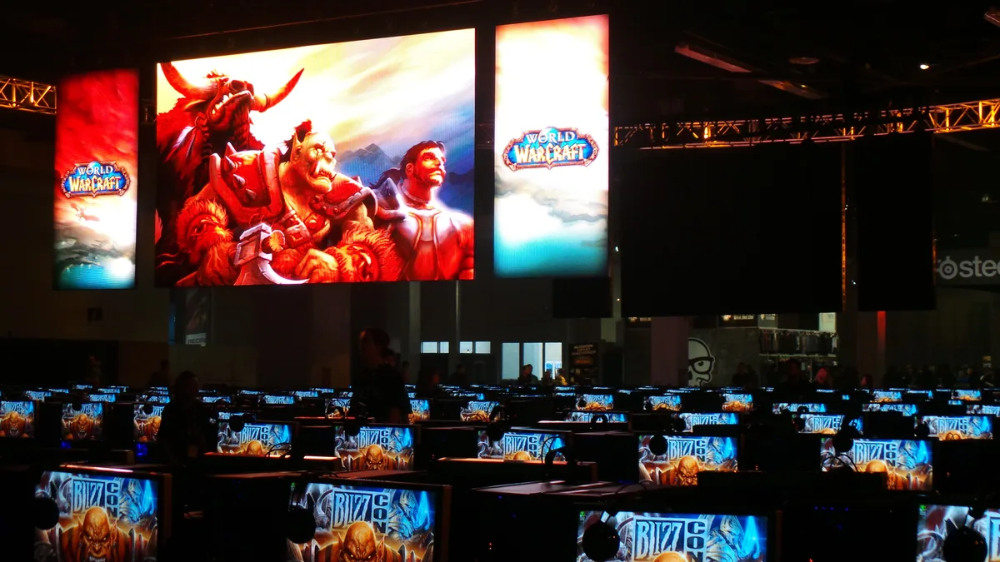
The Frozen Throne's bonus campaign, The Founding of Durotar, was a WoW prototype. It had one hero (Rexxar, and his bear), no base, a map full of quest givers, an inventory to manage, and a story about founding a town. It felt different to the rest of the Warcraft III campaign and was a lot of fun, with Rexxar being a beloved and memorable figure, and still lingers as the archetypical hunter. Sixteen months later Blizzard shipped the same idea as a subscription game, and it peaked at twelve million subscribers[16].
WoW then set the template for every online RPG after it, to the point where "WoW clone" was a genre for a decade, and for fifteen years it was the biggest thing Blizzard had, out of a series that started in 1994 as a strategy game. Hearthstone, Blizzard's card game, is a deck of Warcraft characters, most of them from this one.
Duncan Jones directed 'Warcraft' the film, in 2016, a hundred and sixty million dollar adaptation of the first game's story and not this one's: Durotan, Lothar, Medivh, orcs coming through the Dark Portal. Reviewers hated it (29 percent on Rotten Tomatoes). It made about 440 million dollars anyway, the most any film made from a game had taken until Mario turned up in 2023[17], and it took more money in China in five days than it managed in America in its entire run[18].
The film was ok, but mostly a missed opportunity. They could have shown Arthas, they could have stuck to the lore more stringently, they could have defined a new era of movies with it - but instead they took major liberties in changing the lore and making complex characters largely two dimensional. A real shame. I saw it in the cinema and thought it was fun, I thoroughly enjoyed the music and view of Stormwind when it was shown on the big screen - but I'd only give it a solid 5 / 10.
So a fantasy film about orcs took more than four times its American gross in China. I think that's because a generation of Chinese players spent the 2000s in internet cafes on Warcraft III, then DotA, then WoW. No sequel followed, which is usually put down to the 47 million dollars it took at home. Another missed opportunity, so far.
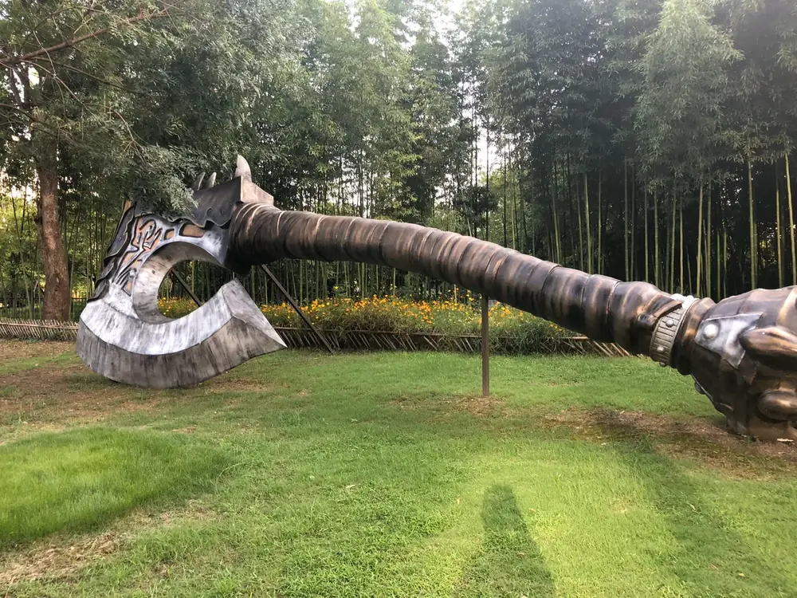
What it did to strategy games
On its own genre, Warcraft III's influence is smaller than everything above suggests, and I should be fair about that. Hero units in strategy games came before it (Warlords Battlecry had them in 2000) and Age of Mythology shipped heroes the same year. What it did was set the small-army, hero-led style that Battle for Middle-earth, SpellForce and eventually Dawn of War II followed. It was also the last strategy game to be a mainstream esport before StarCraft II.
The genre shrank, and its players went to DotA, which is Warcraft III with the base building taken out and one hero left in.
Blizzard didn't learn from it. StarCraft II in 2010 shipped with custom games behind a popularity chart that buried anything new, and a licence claiming ownership of whatever you made in its editor. Its custom scene ended up a fraction the size of Warcraft III's, and Dota Auto Chess happened in Valve's lobby, not Blizzard's.
Warcraft III: Reforged in 2020 was a remake so bad it got a user score of 0.5 out of ten on Metacritic, then the lowest on the site[19]. It came with a new agreement saying that custom games made in the editor belong to Blizzard[20] (hardly a surprise after League of Legends and Dota 2). I found Reforged to be mostly "fine", with more promises than were actually delivered. The previews shown months prior to release looked much more appealing than the gameplay lived up to.
Things W3 Didn't Inspire (much)
- Hero shooters. Overwatch's roster owes something to MOBA hero design, but Team Fortress had classes in 1996 and Team Fortress 2 had the personalities in 2007. Shared ancestor at best.
- Battle royale. Runs through Arma mods, DayZ, and Minecraft Hunger Games servers. Warcraft III had survival maps, but nobody at PUBG seemed to be thinking about them. Fortnite took the mode from PUBG in 2017 and bolted it onto a co-op game about building forts, and overtook PUBG within months.
- Survival crafting. Island Troll Tribes was a Warcraft III map doing hunger, crafting and hide-from-the-other-tribe years before Minecraft, and I would love to connect them, but I cannot find anyone who says they took it from there.
- Roblox and "the game is a platform". Roblox launched in 2006 and had its own reasons. Fortnite's Creative mode, from 2018, lists islands built by players the way Battle.net listed custom maps, but what Epic is chasing with it is Roblox. Warcraft III got there first at scale, but so did Quake and Half-Life. See below.
The rivals
Doom defined the first-person shooter, it made deathmatch, and its WAD files started PC modding as a culture. Half-Life is the other, and the closest rival to the case I'm making: Counter-Strike was a mod that outgrew its parent, Valve hired its two authors, and Riot and Valve did the same thing with DotA a decade later. Then there's Team Fortress, Day of Defeat and Garry's Mod, and Steam exists partly because Valve needed a way to patch Counter-Strike.
Minecraft has sold more copies than anything, and Dune II invented the RTS in the first place. Super Mario Bros. and Tetris are foundations, but their descendants are platformers and puzzle games, and that isn't where the players went.
"Changed how games are made" goes to Doom - I won't argue. "Number of people, right now, playing something that could not exist without it" goes to Warcraft III, through League of Legends, Dota 2 and Honor of Kings alone, before you add a single tower defence or auto battler. That's hundreds of millions of people every month.
Where the credit goes
Some, but far from all, goes to Blizzard. Blizzard's part was an editor that gave players the real tools and a lobby that got a map from one stranger to another with nothing in between. Everything since came from whoever wrote Aeon of Strife, from Eul, Guinsoo and IceFrog, the Drodo team, the anonymous authors of Wintermaul and Gem TD, and everyone who kept that custom game list full.
So thank you, whoever you all are.
Forsaken Kingdom
Blizzard has had one more go, though. At BlizzCon on 12 September 2026 it announced Forsaken Kingdom, the first Warcraft III expansion since The Frozen Throne 23 years ago, and put it on sale the same day[21]. It's about thirty hours of new campaign: a four-mission prologue, The Last Days of Lordaeron, then a main campaign set between Arthas coming home and the founding of the Undercity, with Sylvanas, the Forsaken and the Scarlet Crusade. That main campaign is semi-open and built like the Rexxar one, with a new inventory and talent system[22]. The patch that came with it adds a Definitive Edition graphics mode, lets you select 24 units instead of 12, and improves the World Editor.
After Reforged I didn't expect this (I don't think anyone did), but it's calling me back. I reinstalled Reforged and played some custom games, played some of the original campaign, and I'm trying to avoid hitting buy just yet. I want to see what else is coming first - what other people think - if Warcraft III is now an "active" product, or if this was a one-off.
The campaign follows Garek Bandarion, a lieutenant in Lordaeron's city guard who comes back as one of the Forsaken[22]. The new hero, in the Tavern for anyone playing multiplayer, is a Forsaken Paladin. Undead paladins! That sounds super cool. Maybe I should pick it up...
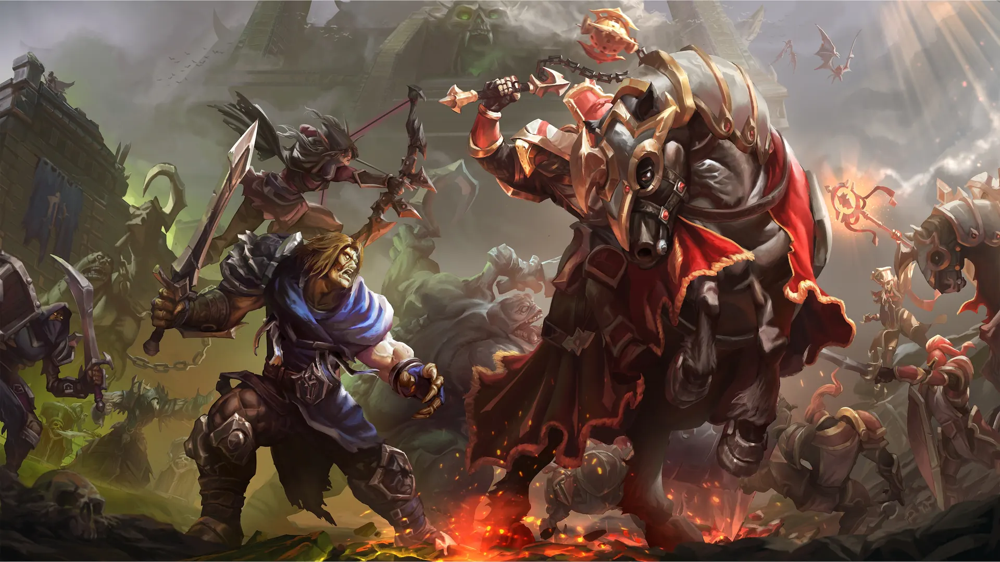
References
- Walker, R. (2002). WarCraft III: How Arthas the Nordic hero conquers his gaming targets. Slate. https://slate.com/culture/2002/08/warcraft-iii.html
- Lane-Pushing Games (n.d.). Aeon of Strife. https://lanepushinggames.com/article/aeon-of-strife
- Huddleston, T. (2016). The world's most popular online videogame now has 100 million players. Fortune. https://fortune.com/2016/09/14/league-of-legends-100-million/
- Tencent Games (2020). Tencent's TiMi Studios sets world daily active user record as mobile MOBA Honor of Kings hits 100 million DAU. PR Newswire. prnewswire.com
- Ye, J. (2020). Tencent says Honour of Kings becomes first game to average over 100mn daily users across any platform. South China Morning Post. scmp.com
- Liquipedia (2021). The International 2021. https://liquipedia.net/dota2/The_International/2021
- Esports Charts (2023). 2023 World Championship. https://escharts.com/tournaments/lol/2023-world-championship
- Lang, J. (2022). Netflix's Arcane is first streaming series to win Animated Program Emmy. Cartoon Brew. cartoonbrew.com
- Bloomberg (2024). Riot's $250 million Netflix show was a TV hit, financial miss. Bloomberg. bloomberg.com
- Wikipedia (2026). Dota Auto Chess. https://en.wikipedia.org/wiki/Dota_Auto_Chess
- Guinness World Records (n.d.). First player to win two consecutive Warcraft 3 gold medals at the World Cyber Games. guinnessworldrecords.com
- Chalk, A. (2008). Pro gamers join Olympic torch rally. The Escapist. https://www.escapistmagazine.com/pro-gamers-join-olympic-torch-rally/
- CNBC (2013). Score! Professional video gamers awarded athletic visas. cnbc.com
- Khan, I. (2017). Riot releases details on NA LCS franchising with $10M flat-fee buy-in. ESPN. espn.com
- Activision Blizzard (2008). World of Warcraft: Wrath of the Lich King shatters day-1 sales record [press release]. investor.activision.com
- Activision Blizzard (2010). World of Warcraft subscriber base reaches 12 million worldwide [press release]. investor.activision.com
- Box Office Mojo (n.d.). Warcraft (2016). https://www.boxofficemojo.com/title/tt0803096/
- Bloomberg (2016). Warcraft tops China's box office with $157 million debut. Bloomberg. bloomberg.com
- Denzer, T. J. (2020). Warcraft 3: Reforged garners a record-low 0.5 Metacritic user rating. Shacknews. shacknews.com
- PC Gamer (2020). All your Warcraft 3: Reforged custom games belong exclusively to Blizzard. pcgamer.com
- Kay, A. (2026). Blizzard releases Warcraft 3: Reforged "Forsaken Kingdom" expansion, the first in over 23 years. gHacks. ghacks.net
- Wikipedia (2026). Warcraft III Reforged: Forsaken Kingdom. https://en.wikipedia.org/wiki/Warcraft_III_Reforged:_Forsaken_Kingdom
Common questions
Doesn't Aeon of Strife on StarCraft mean StarCraft deserves the credit?
For the idea, yes. Aeon of Strife stayed a curiosity because StarCraft's editor couldn't give a unit levels, items or a skill tree and its custom games didn't travel the same way, so DotA needed Warcraft III's heroes to become DotA.
Isn't Counter-Strike the better example of a mod beating its parent?
It's the earlier example and a cleaner one, but Counter-Strike is still the game it was in 1999 with better graphics. DotA produced League of Legends, Dota 2, Honor of Kings, Mobile Legends, Heroes of the Storm, Pokemon Unite and, two steps on, the auto battler, and the same editor produced tower defence on the side.
What about Minecraft?
It's a strong case: the best selling game ever, with a modding scene to match. What it hasn't done is spawn whole genres the way Warcraft III did. Survival crafting games cite it and the Hunger Games servers fed into battle royale, and there's still no Minecraft-shaped genre with hundreds of millions of players that isn't Minecraft.
Can you still play the original?
Sort of. Reforged replaced the classic client in 2020, so it's what you get even if you want the old graphics, and the custom game list and a lot of the old maps are still there. The players run their own ladder, W3Champions, on top of it, fans still host DotA Allstars, and the game is the healthiest it's been in a decade, no thanks to Blizzard.